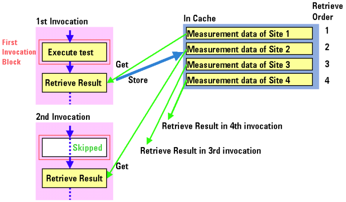
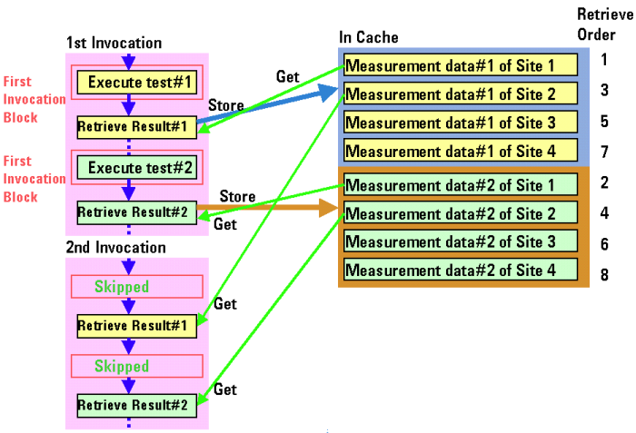

Measurement Data Management
In multisite testing with the first-invocation block, the Result APIs perform a unique operation for handling the measurement data of all sites.
The following Result APIs store the measurement data of all sites into the cache temporarily at the first execution. They can read the measurement data of each site from the cache each time the Result APIs are executed for the particular site.
- Analog.DGT(pin).getWaveform()
- Analog.TIA(pin).getResult()
- Analog.TIA(pin).getMean()
- Analog.TIA(pin).getMin()
- Analog.TIA(pin).getMax()
- Analog.TIA(pin).getJitter()
- ANALOG(set).DGT(pin).getWaveform()
- ANALOG(set).TIA(pin).getResult()
- ANALOG(set).TIA(pin).getMean()
- ANALOG(set).TIA(pin).getMin()
- ANALOG(set).TIA(pin).getMax()
- ANALOG(set).TIA(pin).getJitter()
- Vector(variable).getVector()
- GET_FUNCTIONAL_RESULT(pin)
The following APIs will become obsolete soon:
- SPEC_SEARCH(specName, specType).execute()
- Replace this with the API: SEARCH_FUNC_TASK
- DPS_VFIM(pin).execute()
- This is not supported for DC Scale cards, use DPS_TASK instead
The result data in the cache is identified by site number, used memory area in resource, kind of resource, order of measurement (n-th measurement), and so on. Hence, the Result APIs can access the correct data in the cache. Therefore, do not call the Result APIs conditionally in the test method program, because if a certain Result API is not executed from the result of a conditional branch at the first execution, the cache does not have any corresponding measurement data of all sites, and the Result API will get unknown data at subsequent executions.
The following figures show operations using measurement data handled in multisite testing.


Functional changes
- Introduced before SmarTest 6.3.2